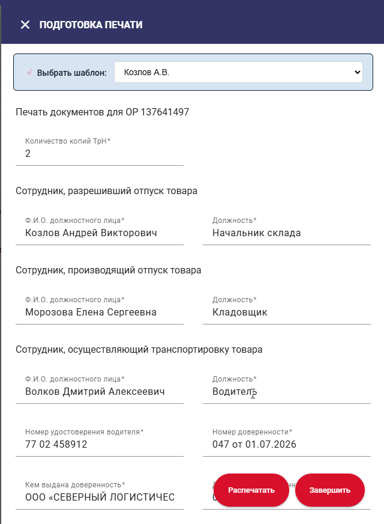

Автоматическое заполнение полей документов в платформе SEW шаблонами. Сохраняйте наборы полей — вводите одним кликом.
Скачать SEW-Pattern.crxАвтоматизация рутинного заполнения форм в SEW
Создавайте шаблоны с заранее заполненными полями: даты, ФИО водителя, сотрудников и другие параметры.
Откройте форму документа — выберите шаблон из выпадающего списка, и все поля заполнятся автоматически.
Создавайте, редактируйте и удаляйте шаблоны прямо в панели настроек расширения — без сторонних инструментов.
Принцип работы расширения на примере создания ТрН

Расширение появляется в форме документа и предлагает выбрать сохранённый шаблон. После выбора все поля заполняются мгновенно.
Расширение распространяется как файл .crx — установка без Chrome Web Store
Перейдите на страницу Releases и скачайте
файл SEW-Pattern.crx.
В адресной строке Chrome введите chrome://extensions/ и нажмите Enter.
Переключатель Режим разработчика в правом верхнем углу страницы — включите его.
Откройте папку со скачанным файлом и перетащите SEW-Pattern.crx прямо на
страницу chrome://extensions/.
Откройте sew.mvideoeldorado.ru и зайдите в раздел "Отгрузка", нажмите "Печать документов". В правом верхнем углу появится панель шаблонов.
Создание шаблона и заполнение формы
Нажмите на иконку SEW Templates в панели Chrome → значок шестерёнки (справа вверху).
Заполните форму: укажите название шаблона и значения полей, которые хотите сохранять. Нажмите Сохранить.
Вернитесь на SEW, откройте раздел "Отгрузка", нажмите "Печать документов". Вверху формы появится выпадающий список шаблонов — выберите нужный.
Все поля заполнятся автоматически.